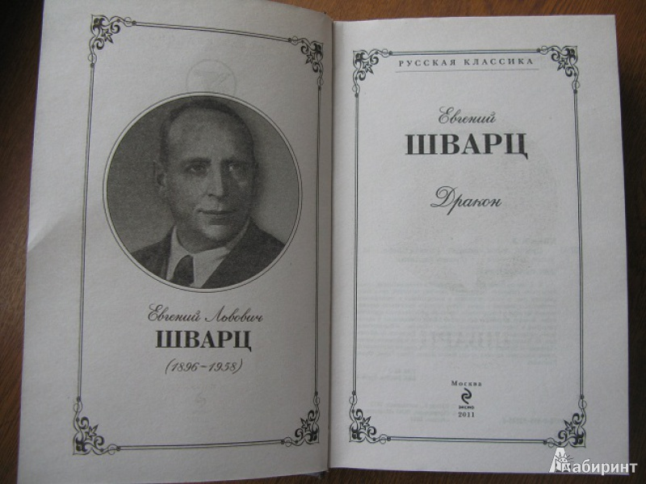

Социальная драма Шварца, основанная на сказочном азиатском сюжете о драконе, которого невозможно победить, ибо победитель сам становится драконом. В пьесе Шварца люди, существующие под гнетом дракона, считают свою жизнь вполне сносной – они привыкли к жестокости и притеснениям, надеясь, что хуже не будет. Эти люди не особенно хотят, чтобы их спасали. Но юный и чистый душой юноша все же совершает подвиг – свергает угнетателя. В конце он понимает, что убить дракона недостаточно, чтобы освободить людей. Ведь люди, только что освободившиеся от одного тирана, с удовольствием начали служить следующему…
